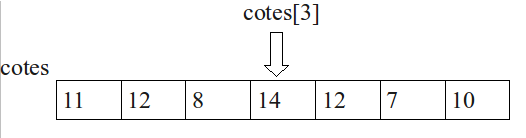
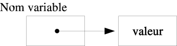

Nous présentons ici une vue simplifiée des tableaux en Java afin de coller au cours d’algorithmique.
Nous aurons l’occasion d’être plus précis en DEV2.
Pour rappel, il est nécessaire de manipuler plusieurs variables similaires auxquelles on accède par un indice :

Contrairement à algo où on a le choix des valeurs desbornes pour les indices,
en Java, les indices varient de 0 à taille du tableau - 1.
0 est l’indice de départ.
En Java, l'étape de création est séparée de l'étape de déclaration.
En effet, l'étape de déclaration réserve un emplacement mémoire sur la pile qui contiendra
une adresse
où trouver la valeur des éléments du tableau.
La création connaitra lataille du tableau, le créera sur le tas et remplira l'adresse
sur la pile.

Pour déclarer un tableau :
Type[] identifier
Par exemple :int [] est le type tableau d’entiersString [] est le type tableau de chaines de caractères
int [] cotes ;
String [] noms;
Pour créer un tableau :
identifier = new Type[taille]
Par exemple :new int[3]new String[taille] où taille est défini
int [] entiers ; // déclaration
entiers = new int[3]; // création
La déclaration et la création peuvent être combinées
int [] entiers = new int[3];
Par défaut, les éléments sont initialisés à 0 (numériques) ou false (booléens). Ce ne sont pas forcément les valeurs initiales que nous désirons. Pour changer ça :
identifier = new Type[] {x, x}
Par exemple :new int[] {42, 17, -5}new String[] {"foo", "bar"}
int [] entiers = new int[] {0x2A, 021, −5};
String [] noms = new String[] {" Victoria ", "Melanie", "Melanie", "Emma", "Geri"};
double[] réels ;
réels = new double[] {4.2, −1};
On peut déclarer le tableau, le créer et l'initialiser en une seule étape, en donnant ses valeurs :
int [] entiers = {0x2A, 021, −5};
double[] pseudoRéels = {4.5, 1E−4, −4.12, Math.PI};
// Mais si sur 2 lignes :
double[] réels ;
réels = {4.2, −1}; // FAUX
int [] entiers = {3, 14, 15};
int entier = entiers [2]; // entier vaut 15
entiers [1] = 85;
entier = 0;
entier = entiers [ entier +1]; // entier vaut 85
Par exemple :
package be.heb.esi. lg1 . tutorials . tableaux ;
public class InitialisationTableau {
public static void main(String [] args) {
int [] entiers = new int[10];
for(int i = 0; i < 10; i++) {
entiers [ i ] = i;
}
}
}